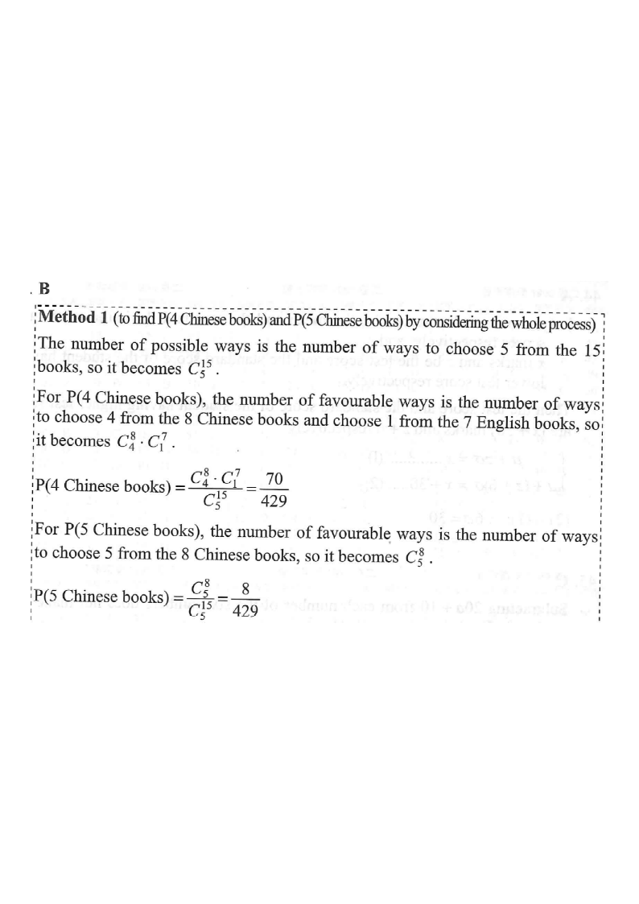

Step 1 — the box: 8 Chinese books (red) and 7 English books (blue).
There are $8$ Chinese books and $7$ English books in a box. If $5$ books are randomly chosen from the box at the same time, find the probability that at most 3 Chinese books are chosen.
A. $\dfrac{2}{11}$ B. $\dfrac{9}{11}$ C. $\dfrac{61}{143}$ D. $\dfrac{82}{143}$

Total books $=8+7=15$. Choosing $5$ from $15$:
$$C_5^{15}={}^{15}C_{5}=\frac{15!}{5!\,10!}=3003$$
Hint: Denote $C_r^n={}^{n}C_{r}=\dfrac{n!}{r!\,(n-r)!}$.
"At most $3$ Chinese" means $0,1,2$ or $3$ Chinese books.
Instead of adding $4$ cases, use the complement:
$$P(\le 3\text{ C})=1-P(4\text{ C})-P(5\text{ C})$$
Hint: Only $4$ or $5$ Chinese books fail the condition — just two cases.
Choose $4$ from the $8$ Chinese and $1$ from the $7$ English:
$$P(4\text{ C})=\frac{C_4^{8}\cdot C_1^{7}}{C_5^{15}}=\frac{70\times 7}{3003}=\frac{490}{3003}=\frac{70}{429}$$
Hint: $C_4^{8}=70$, $C_1^{7}=7$.
Choose all $5$ from the $8$ Chinese (no English chosen):
$$P(5\text{ C})=\frac{C_5^{8}}{C_5^{15}}=\frac{56}{3003}=\frac{8}{429}$$
Hint: $C_5^{8}=56$.
$$P(\le 3\text{ C})=1-\frac{70}{429}-\frac{8}{429} =1-\frac{78}{429} =\frac{429-78}{429} =\frac{351}{429}=\frac{9}{11}$$
Hint: Simplify $\frac{351}{429}$ by dividing numerator and denominator by $39$.
Question. There are \(6\) Chinese books and \(4\) English books in a box. If \(3\) books are randomly chosen from the box at the same time, find the probability that at most \(1\) Chinese book is chosen. A. \(\dfrac{1}{3}\) B. \(\dfrac{1}{2}\) C. \(\dfrac{2}{3}\) D. \(\dfrac{5}{6}\) [1 mark]